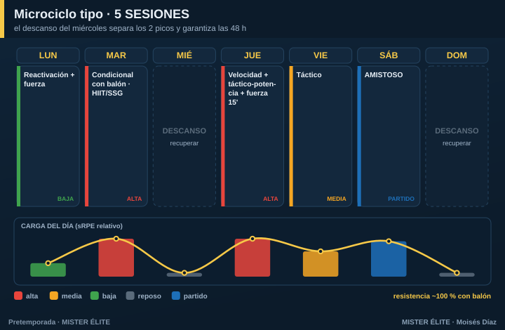

Plan · 5 SESIONES
Para quién: amateur competitivo, 5 sesiones por semana. Pretemporada: 5-6 semanas.
Principio rector: pierdes un día respecto al plan de 6 → toca agrupar estímulos compatibles y reforzar la integración con balón. Mantener dos picos sigue siendo posible si colocas bien el descanso.
Microciclo tipo

La clave es el descanso del miércoles: separa los dos picos (martes y jueves) y garantiza las 48 h entre estímulos de alta intensidad.
- Lunes — reactivación + fuerza (carga baja).
- Martes — pico 1: condicional con balón (HIIT/SSG).
- Miércoles — descanso o trabajo regenerativo opcional.
- Jueves — pico 2: velocidad (inicio, fresco) + táctico-potencia + fuerza corta 15'.
- Viernes — táctico (carga media).
- Sábado — amistoso.
Cómo se reparte la carga
- Dos picos separados por el descanso del miércoles (cumple las 48 h sin esfuerzo).
- La resistencia va ~100 % con balón. Ya no hay sesiones de "correr sin balón".
Fuerza, velocidad y prevención
- Fuerza en bloques cortos de 15-20' anexos a la sesión técnica, 2 veces/semana (lunes y jueves).
- Velocidad 1 día fijo (jueves), siempre fresco al inicio.
- Prevención en los calentamientos.
Amistosos
1/semana (sábado), desde la semana 2.
Trabajo individual
En el día libre (miércoles), rodaje aeróbico suave opcional para los jugadores con menos base. No obligatorio para todos.
Progresión por fases (6 semanas tipo)
| Semana | Fase | Énfasis físico | Énfasis táctico | Amistoso |
|---|---|---|---|---|
| 1 | Acumulación | Base aeróbica con balón, fuerza general | Principios | Test / suave |
| 2 | Acumulación | Base + HIIT | Subprincipios, posesión | 1 |
| 3 | Transformación | HIIT, inicio RSA | Fases de juego, ABP | 2 |
| 4 | Transformación | RSA, velocidad | Automatismos | 3 |
| 5 | Realización | Velocidad/potencia | Once tipo, ritmo real | Fuerte |
| 6 | Realización | Tapering | Plan de debut | Debut |